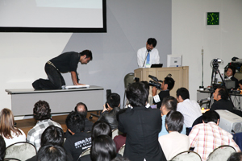

- Organized by
- Computer Entertainment Supplier's Association / Nikkei Business Publications, Inc.
- Cooperation by
- International Game Developers Association Japan Chapter (IDGA Japan)
Hardware Supported by
What's New
Live Coverage on USTREAM!
SOWN2011 announces the 10 presenters!
What is "SENSE OF WONDER NIGHT"?
"SENSE OF WONDER NIGHT (SOWN) 2011" assigns spotlights to a game developers to draw wellspring of ideas with suddenly change the world. SOWN 2011 finds out the idea of a game causing changing sense: "SENSE OF WONDER". "SENSE OF WONDER NIGHT (SOWN)2011" will be held to provide an opportunity of the presentation for game developers at TOKYO GAME SHOW. Total of 9 presentation works picked from application more than 60 in total is carried out at previous event. Approximately 300 people have attended , and the venue at the selection has taken place in the prosperity with an international atmosphere. SOWN 2011 becomes the fourth anniversaries at the realization of the valuable plan to the game developer of every layer.
(1) Game platform-related companies as Screening Committee Members
The Screening Committee has traditionally been comprised mainly of game/application developers active on the front lines, but in light of the recent expansion of game platforms?including smartphones, tablets and web browsers?this year, the Screening Committee will be comprised mainly of companies engaged in the production and distribution of game content on a wide variety of platforms.
(2) New “Company Awards” by Screening Committee Members
“Company Awards” have been established. These awards bear the names of the companies to which the Screening Committee Members belong. Each Screening Committee Member individually gives the “Company Awards” to excellent works, based on prior reviews and presentations during the show. These awards are intended to create opportunities to bring out new pieces of work by connecting creators with new ideas and companies (Screening Committee Members) that can distribute content.
*No extra prizes, such as prize money, are given.
Objectives of “SENSE OF WONDER NIGHT”


- To introduce games with a game design and ideas that are experimental and creative, and that cannot be called conventional or traditional
- To heighten awareness of the importance of creating a game that gives people a “sense of wonder”, a sense that something will change in their world, and to invigorate the game industry
- To offer people creating experimental games opportunities for the future
- To create new domains in the game industry
We have begun inviting entries to SOWN 2011. Why don't you show your idea to the Tokyo Game Show audiences who come from around the world? And we would like you to be inspired by other presenters and audiences and find new experience and network at SOWN.
Games “Sense of Wonder Night” is Intended For
Games of any genre, platform, language, degree of completion, already released or non-released, which meet one or more of the following criteria:
- A game that realizes a totally new, never-seen-before gaming experience
- A game that employs technologies that have not previously been used successfully, such as natural language processing, physics engines, image recognition or gesture control, to present a new kind of experience.
- A game that challenges the common sense of ordinary games
- A game that pursues new ways of gaming expressions, a game which changes the player’s vision of the world after playing and experiencing it.
- A game with emergent features
- A game that brings user’s activities into the game by including features such as AI interactions, different tools and social elements.
- A game that makes people want to play it immediately
- A game that makes everyone think that they want to enjoy the new experience for themselves and feel that they want to treasure it.
- An amazing game
- Any kind of new, eye-grabbing and impressive game!!
Games “Sense of Wonder Night” is NOT Intended For
Games to which the following conditions apply will NOT meet the selection criteria:
- A game in which only the elements comprising the game are the key factor
- A game in which the newness and highlight are focused on the elements comprising the game (such as the background setting, situation, character design, graphics, story, audio, etc.) instead of the game itself.
- A game of a new genre created by combining or rehashing existing genres
- However, a game providing a truly new game experience may be considered for acceptance.
- A game that is new only in targeting a specific user group
- A game will not be deemed as being new and innovative just because it is focused on a specific user group (such as female users or the elderly). However, a game providing a truly new game experience may be considered for acceptance.
- A game created for the purpose of demonstrating a technological innovation, experimental business model, or distribution mechanism
- A game of this kind will not be completely rejected from the screening process but they must demonstrate that it is capable of directly and tangibly providing a new game experience.
Thanks
The "SENSE OF WONDER NIGHT" event has received a lot of inspiration from the "Experimental Gameplay Workshop" that was started at the Game Developers Conference in 2001. We would like to express our thanks to the many people who helped to make these workshops a success and to all our friends.